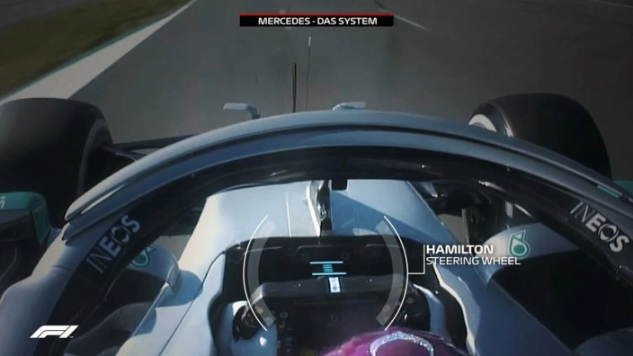
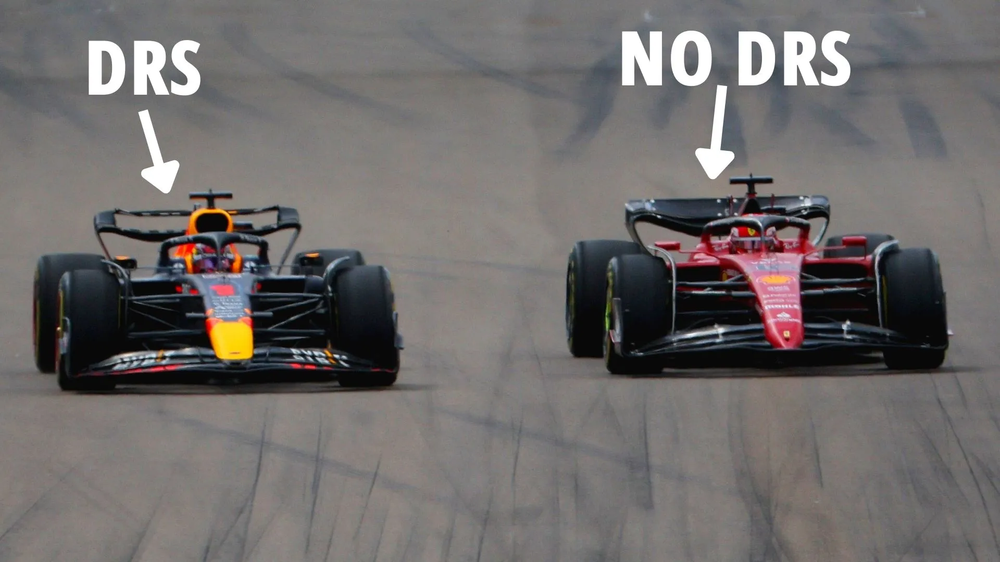
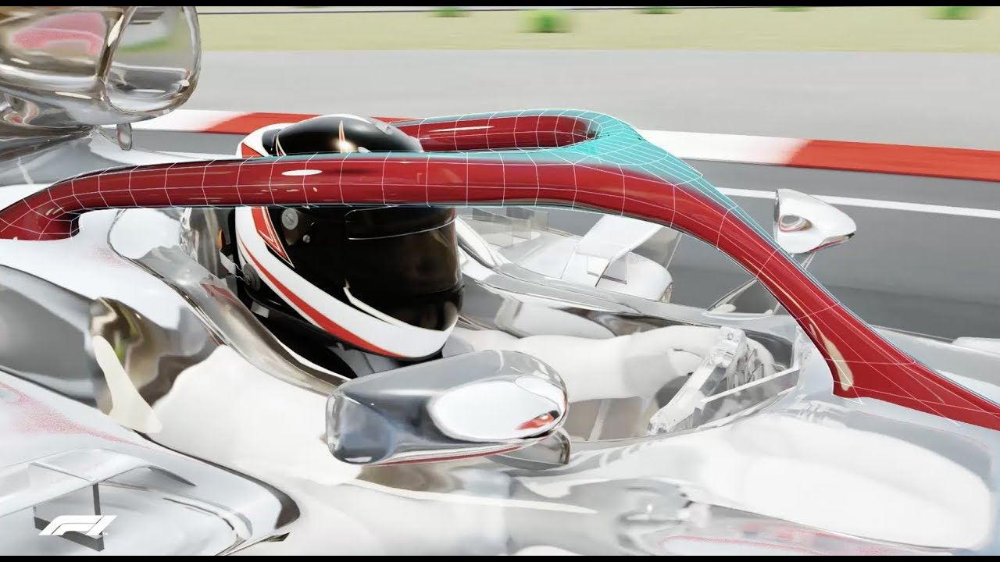

1: DAS-system
One very interesting technology in the history of Formula 1 is the DAS-system by Mercedes in the 2020 season. DAS stands for Dual Axis Steering. The DAS-system made it so that the steering wheel could be pulled back a little while driving,
this changed the alignment of the front wheels so the car would be faster through corners but also remain fast on straights. The system was immediatly banned for the following season which meant other teams couldnt profit from the invention. But Mercedes won the 2020 championship with ease.

Image from ©GP FANS article:
Dual Axis Steering (DAS): What is it, and why is it causing controversy?
More information about the DAS-system
2: DRS
Another very nice technology in F1 is the DRS. DRS stands for Drag Reduction System. In other words, it reduces the amount of drag the car is experiencing by opening a gap in the rear wing. This makes the car faster in a straight line since there is less air resistance.
The DRS was introduced in 2010 to increase the amount of overtaking manouvres being made during the race. Drivers can enable DRS when they are 1 seconds or less behind another car, and when they are in a DRS-zone, which is basically a straight.

Image from an article of ©The Sun:
WINNING FORMULA What is DRS in F1? All you need to know about Drag Reduction System
More information about the DRS
3: The Halo
Probably the most popular invention in F1 is the Halo. The halo was brought to Formula 1 in 2018 as a result of a fatal crash a few years prior. The halo is a curved bar around the cockpit to protect the head of the driver. It's fully made out of titanium and can withstand the strenth of a 20 Kg wheel at the speed of 225 kph.
Since the halo was introduced several drivers have had crashes where they were very well protected by the Halo. The most memorable is the crash from Grosjean in bahrain 2020.

Image from the official Formula 1® youtube channel:
F1 Explained: The Halo
More information about the Halo